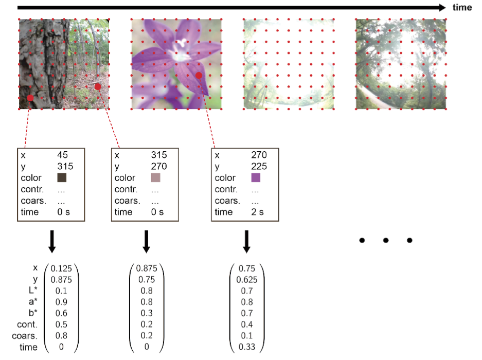

Building a Content-Based Multimedia Search Engine II: Extracting Feature Vectors
This is part 2 in a series of tutorials in which we learn how to build a content-based search engine that retrieves multimedia objects based on their content rather than based on keywords, title or meta description.
- Part I: Quantifying Similarity
- Part II: Extracting Feature Vectors
- Part III: Feature Signatures
- Part IV: Earth Mover’s Distance
- Part V: Signature Quadratic Form Distance
- Part VI: Efficient Query Processing
In the previous section, we saw how similarity between multimedia objects can be formalized and which types of queries exist with respect to this formalization. In a step towards efficiently computing similarity between two multimedia objects, we are now going to see how we can characterize the contents of individual multimedia objects (in our example, a video) by extracting a set of so-called feature vectors, which are vectors from the Euclidean space that describe certain local characteristic properties.
Since we are interested in visual similarity between two videos, our goal is to extract a set of vectors, each of which describes certain local visual properties of the video numerically. This process can be depicted visually as follows:

We first select a certain amount of sample frames from the video (e.g. 10 frames per second). For each of these frames, we select a fixed amount of equidistant sample pixels. Finally, for each sample pixel, we compute an 8-dimensional Euclidean vector $(x, y, L, a, b, \chi, \eta, t)$ describing the visual appearance of the pixel and its context. The choice of this vector is just a suggestion and it isn’t necessary to include all of features presented here.
The first two dimensions of this vector correspond to the x and y coordinates of the pixel inside the frame. The next 3 dimensions correspond to the color of the pixel in the L*a*b* color space, i.e. the lightness, the position between red and green and the position between blue and yellow (cf. [Wik15b]). The reason we choose this color space instead of e.g. RGB is the fact that Euclidean distances in this space have a significantly higher correlation with perceptual dissimilarity than other color spaces, making it more suitable for our task of measuring visual similarity. Additionally, we calculate the contrast $\chi$ of a 12 x 12 neighborhood of the pixel as proposed by Tamura et al. in [TMY78], which is a measure of the dynamic range of the colors. Furthermore, we calculate the coarseness $\eta$ of the pixel, as proposed in [TMY78], which is a measure of how big the structures surrounding that pixel are. Finally, we add the time t of the frame from which the pixel was sampled as another dimension (in seconds from the beginning of the video).
The whole set of extracted feature vectors, then, comprises a summary of how the visual contents of the video unfold over time.
The entries of the vectors all measure different aspects and stem from different ranges. Since we want all dimensions to have equal importance in the distance computations, irrespective of their value range, we normalize all 8 dimensions individually, yielding a vector whose entries lie between 0 and 1: The positions x and y are divided by the image width and height, respectively. The L* color coordinate ranges from 0 to 100 and is hence divided by 100. The a* and b* color coordinates range from -128 to 127. Therefore, we add 128 and divide by 255. The contrast $\chi$ ranges from 0 to 128 and is therefore divided by 128. The coarseness $\eta$ ranges from 0 to 5 and is hence divided by 5. Finally, the time is divided by the video duration.
The first 7 dimensions that describe a pixel in the context of its frame have yielded high effectiveness for the task of retrieving visually similar images (cf. [BUS10a]) and were hence adopted. Since a video can be thought of as a generalization of an image along another dimension (the time dimension), the image retrieval approach was extended simply by adding the time as another dimension to the feature vectors. The rationale for this is that there is no conceptual difference between the spatial dimensions and the time dimension. A video can be imagined to be an image changing over time. The fact that a video is usually represented as a sequence of frames is just a way to store a video digitally, and it has lead many of the video retrieval approaches to base their video representations on frame sequences, even though semantically a video can be treated reasonably as an image changing continuously over time rather than as a sequence of images.
We now know how we can express local visual properties of a video by means of a set of feature vectors. In the next section, we will see how we can summarize these vectors into a more compact representation scheme that allows us to store the contents of the video using less space, and to compute the visual similarity between two videos more efficiently. Continue with the next section: Feature Signatures
References
[Wik15b] Wikipedia. Lab color space https://en.wikipedia.org/wiki/Lab_color_space,
2015.
[TMY78] Hideyuki Tamura, Shunji Mori, and Takashi Yamawaki. Textural features corresponding to
visual perception. IEEE Transactions on Systems, Man and Cybernetics, 8(6):460–473,
1978.
[BUS10a] Christian Beecks, Merih Seran Uysal, and Thomas Seidl. A comparative study of
similarity measures for content-based multimedia retrieval. In Multimedia and Expo (ICME), 2010
IEEE International Conference on, pages 1552–1557. IEEE, 2010.